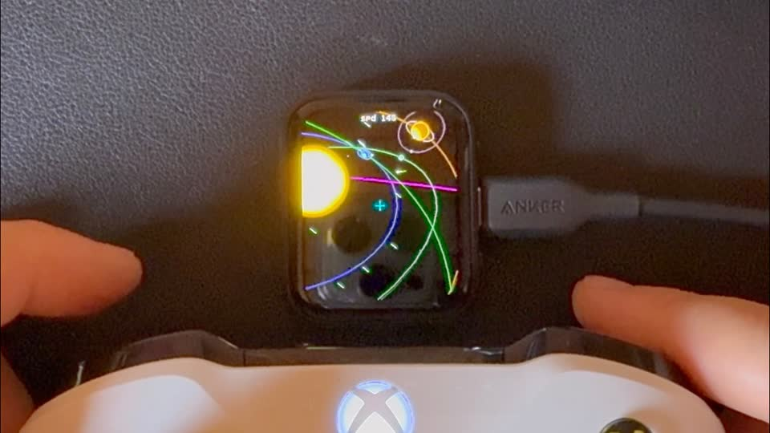

2026ESP32-S3 · Modern C++
Ghost Pixel Lab
A pocket computer on a 368 × 448 AMOLED: a Commodore 64 you program in BASIC, an Outer-Wilds-style space sim with procedural voxel terrain, and a dozen hardware experiments behind a touch launcher.
- C++17
- ESP32-S3
- AMOLED / QSPI
- BASIC interpreter
- Voxel terrain
Sandbox · active
Read more →